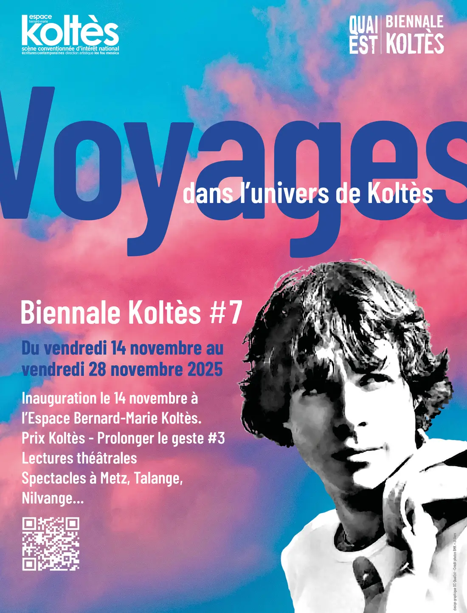
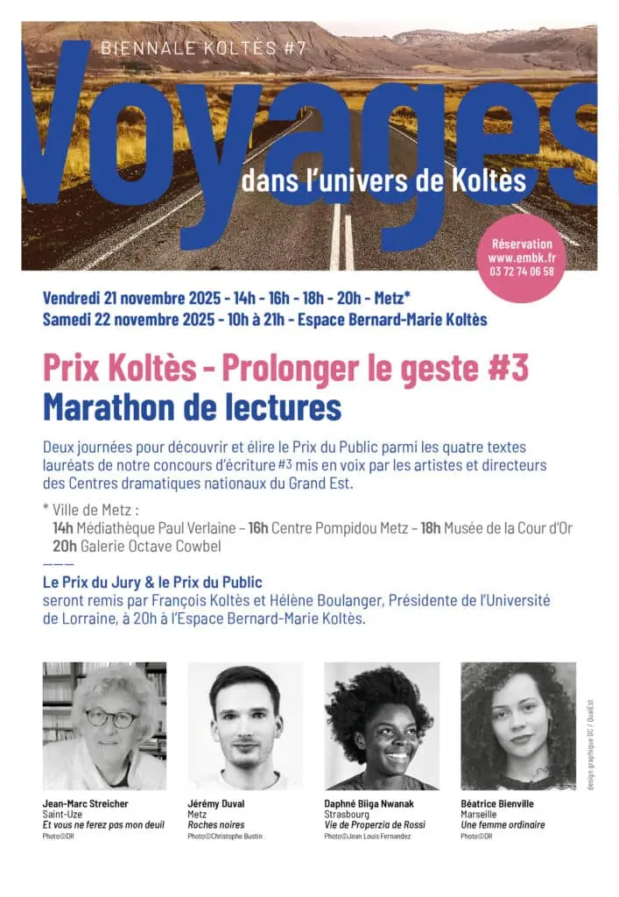

Du 14 au 28 novembre 2025, la 7e Biennale Koltès invite à voyager dans l’univers du dramaturge messin : sur les continents de ses périples, mais aussi dans le voyage de ses textes et de leurs traductions.
Théâtre, bien sûr, mais aussi musique, danse, chant et cinéma : deux semaines de rencontres, de frontières interrogées et de voyages intérieurs, à Metz et au-delà (Talange, Nilvange). L’édition est portée par l’association Quai Est avec le théâtre universitaire Bernard-Marie Koltès, et se conclut par le marathon de lectures du 3e Prix Koltès.
La librairie éphémère Autour du Monde accueille le public dans le hall du théâtre Bernard-Marie Koltès pendant les soirées.


Programme
- Ven 14
nov.20 hSoirée d’ouverture · Théâtre Bernard-Marie Koltès« La Nuit, dans les forêts d’Ukraine »
Spectacle musical des Dakh Daughters, mis en espace par Lucie Berelowitsch d’après La Nuit juste avant les forêts, dans une traduction en ukrainien de Galyna Dranenko. Interprétation : Roman Yasinovskyi. Commande de Quai Est, création avec Le Préau – CDN de Normandie-Vire. Billetterie au profit de l’association ELU (Échanges Lorraine Ukraine).
- Sam 15
nov.20 hCréation · Théâtre Bernard-Marie Koltès« Dans tes voyages, je serai ton bagage »
Lecture musicale autour des lettres d’Amérique du Sud de Koltès, portée par Nelly Latour-Mailek. Mise en espace, création musicale et chants de Tania Pividori, accompagnement musical de Louis-Marie Hippolyte.
- Mer 19
nov.20 hCréation · AGORA, Metz« Juste le bruit des vagues »
Pièce d’Amin Erfani mise en scène par Vincent Goethals, fruit de deux années de travail avec les élèves du Conservatoire à rayonnement régional de Metz. Un habitant et un migrant se rencontrent sur un banc public. Entrée et placement libres.
- Jeu 20
nov.20 hThéâtre Jacques Brel, Talange« Les Méduses » + « Le Printemps vient en riant »
Ouverture de soirée avec « Les Méduses », film de témoignages sur les violences faites aux femmes (Cie Entre les Actes & Nos tribus, réalisation Cécile Rivet), puis « Le Printemps vient en riant », film de Noha Adel sélectionné au Festival du film arabe de Fameck 2025. Réservations : resaespacemoliere@gmail.com.
- Ven 21
nov.14 h · 16 h · 18 h · 20 hMetz · lieux partenairesPrix Koltès #3 — Marathon de lectures
Lectures mises en espace des quatre textes finalistes : Médiathèque Paul Verlaine (14 h), Centre Pompidou-Metz (16 h), Musée de la Cour d’Or (18 h), Galerie Octave Cowbell (20 h). Gratuit, réservation conseillée.
- Sam 22
nov.10 h → 21 hThéâtre Bernard-Marie KoltèsMarathon de lectures — reprise & remise des prix
Reprise des lectures, vote du public et du jury, cérémonie de remise des prix du jury et du public. Gratuit.
- Dim 23
nov.18 hÉglise Saint-Maximin, Metz« Les chants du Voyage »
L’ensemble vocal MOZAÏK, dirigé par Thierry Morin, associe lectures d’extraits de Koltès et chants de traditions vocales du monde (Cameroun, Malaisie, Albanie, Lettonie, Haïti, Philippines…), en partenariat avec Voix Haute.
- Mer 26
nov.20 hCréation / lecture · Théâtre Bernard-Marie Koltès« Les Éveillés »
Texte et mise en espace de Suzie Colin. Sur un toit de la ville, des descendants de Borny et Plantières — personnages du Retour au désert — veillent la nuit… jusqu’à l’arrivée d’un homme au bord du toit.
- Jeu 27
nov.18 hCréation · Médiathèque Victor Madelaine, Nilvange« Quand vient la nuit… »
Spectacle poétique de José Pereira, avec Marina Lozano et Mathieu Cortési, sur les mystères de la nuit et la naissance du jour. Entrée et placement libres.
- Ven 28
nov.20 hLe Quai – Centre social et culturel de Metz-Sablon, salle KoltèsSoirée de clôture · cinéma
Vidéo-poème de Milène Tournier « Bernard-Marie Koltès dans sa ville » (résidence Récit’Chazelles, projet TRACES, octobre 2024), puis « Portrait d’un certain Orient », film de Marcelo Gomes sur la saga des immigrés libanais en Amazonie, suivi d’une visio-conférence avec le réalisateur. Entrée et placement libres.
Le 3e Prix Koltès s’invite à la Biennale
Le marathon de lectures du Prix « Prolonger le geste » #3 s’est déroulé les 21 et 22 novembre 2025. Quatre textes, quatre autrices et auteurs, lus à voix haute devant le public.
Voir les finalistes →